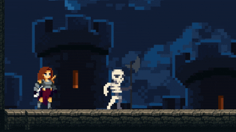

ORIGEN Y ATRIBUCIÓN
Estoy siguiendo el curso de Unity 2D RPG de AlexDev en Udemy para aprender las bases del desarrollo de RPGs en Unity. Una vez termine el curso, utilizaré el conocimiento adquirido y los assets reutilizables — combinados con recursos de itch.io — para construir Fallen Valkyrie como un juego propio y original. Mis conocimientos estan orientados a juegos como los que ya he publicado en itchio, un juego de naves de habilidad en 2D y un simulador en 3D de gestion de cocina en la que preparas platos de sushi. Ademas tengo pendientes de publicar otro shooter de naves 2D y un juego tipo arkanoid. Fallen Valkyrie es mi primer intento de hacer un RPG, y estoy emocionada por el proceso de aprendizaje que esto implica.
Todo el crédito y respeto para AlexDev por el excelente material de enseñanza. Este devlog existe para documentar el proceso con honestidad: de alumna a creadora.
📚 CURSO: ALEXDEV — UNITY 2D RPG (UDEMY)¿DÓNDE ESTAMOS?
LO QUE HAY HECHO HASTA AQUÍ
HASTA HOY · 05/03/2026
Llevo un tiempo robando horas al día para avanzar en este proyecto. De momento tengo bastante trabajo hecho en la lógica de la protagonista: movimiento completo, máquina de estados, salto, dash, deslizamiento por paredes y ataque. También tengo casi terminado el tilemap del primer nivel y estoy cerrando los ajustes del primer enemigo: un esqueleto.
DIARIO DE DESARROLLO
Las pequeñas victorias cuentan. Cada línea de código es un paso.